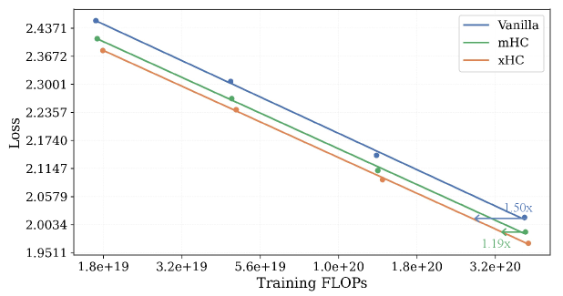
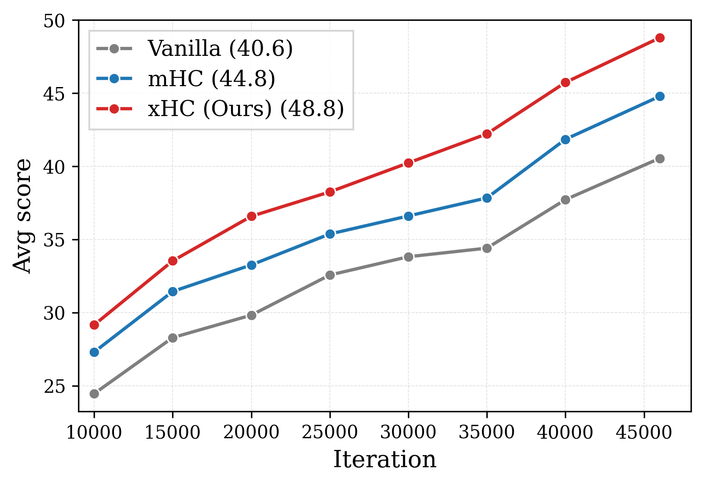
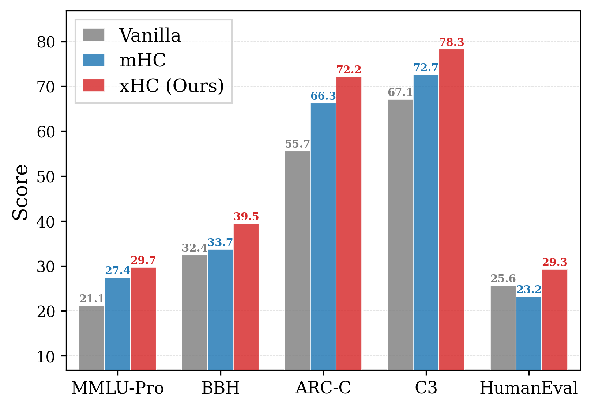

残差流（residual stream）是Transformer跨层传递信息的主干，但它几十年来基本就是「一条恒等通路」，对跨层信息流没有可学习的控制。Hyper-Connections把它扩成N条并行流，但现有方法（含最强的mHC）卡在N=4就上不去了。
xHC（Expanded Hyper-Connections）第一次把HC家族模型的扩展率N真正推过4：18B/28B MoE上全面超越mHC与vanilla基线，且只多百分之几的FLOPs。本文拆解它为什么有效、以及工程上如何压住访存开销。
大模型架构在注意力、MoE、宽度/深度/数据上进步神速，但承载token表示的残差流几乎没变：它仍是一条单一恒等通路，对跨层信息流没有任何可学习的控制。
Hyper-Connections（HC）挑战了这个设计：用N条可学习的并行残差流取代单流，每条流由一个可学习混合矩阵控制。在其基础上，Manifold-Constrained HC（mHC）让多流残差在大规模下训练稳定，是当前最强的HC变体。
残差流扩展用很少的额外FLOPs就增加了模型的「持久状态」，等于在宽度和深度之外提供了一条新的记忆缩放轴。先前把N从1扩到4收益明显，说明这是个有前途的方向。但现有HC家族方法普遍停在N=4。我们的实验（图1）显示：继续加大N，收益迅速饱和：N从4到16，loss只微降，训练FLOPs却涨了32%。这条缩放轴基本没被释放出来。
我们认为这种「收益-成本」失衡不是偶然，而是来自两个截然不同的瓶颈：一个限制大N的收益，一个抬高大N的成本。
其一是信息瓶颈：每条流本应存下不同的层输出加权历史，但每一层只往多流状态里注入一个写回（write-back）信号。N越大，要形成有意义且多样的流历史，需要的写回信息就越丰富，而单个信号给不了：多余流越来越冗余。
其二是计算瓶颈：在mHC中，主导成本来自用「依赖输入的投影」生成残差映射 ℋ_res ∈ ℝ^{N×N}。这个投影要从N·C维残差状态预测N² 个系数，成本随O(N³C) 增长，比性能收益快得多。
两个瓶颈叠加：信息瓶颈限制了大N的收益，成本瓶颈抬高了它的代价。这也说清了「要让扩展率成为真正的缩放轴」需要什么：模型必须提供更丰富的写回信息，同时避免 ℋ_res缩放的立方代价。
xHC在mHC稳定的多流公式基础上，用两个互补设计让大N扩展既有效又便宜。
为了提高大N的收益，xHC沿因果token序列引入时序特征增强：用多尺度因果卷积，从邻近token借来低成本特征，丰富写回信号；随着流数变多，写回信息也更多样。
为了控制大N的成本，xHC引入稀疏残差流架构：残差混合与写回只激活N条流中的k条，而读路径保持稠密，每一层仍能访问完整的N流状态。
这两个设计结构上解耦却高度协同：N越大，时序增强越有用（因为额外流需要更丰富的写回信息）；同时稀疏残差更新越值钱（因为它大幅削减大N扩展引入的额外FLOPs）。
如第3.2节分析，大N扩展之所以饱和，是因为每一层只给所有流提供一个写回分量。最直接的修法是给每条流单独算一个输出，但那会把层FLOPs乘上N。
xHC改从邻近token借低成本局部上下文来丰富写回基。自回归预测本就依赖周围上下文，邻近隐藏输出与当前token语义兼容，可以并入睡回信号。我们用轻量的因果逐通道1D卷积聚合这些信息，既保住自回归顺序又只加很小开销。
具体做法：对层输出做r个因果逐通道卷积，核大小各不相同（如 {4,8,12}），在不同上下文范围捕捉邻近token信息，提供多粒度的写回分量，把写回基从「单个层输出」扩展开来。主设置r=3，故K_r=4。卷积逐通道且因果，每层只加C·Σκ_j个参数，且仅在MLP（MoE FFN）之后做：注意力已经混了位置，在其后加时序增强会让训练不稳。
由于逐通道卷积的输出可能与原始层输出强相关，直接组合会被 ℋ_post放大原方向、让写回缩放不可控。于是我们对K_r个分量做修正Gram–Schmidt正交化，保证写回基多样且可控。
成本瓶颈来自对所有N条流做残差混合。xHC只更新N条中的k条活跃流，同时保持对完整N流状态的稠密读访问。前向分三步：路由、读、写。
流路由：路由器从归一化的完整N流状态产出每条流的重要性分数（用sigmoid而非softmax，避免赢者通吃）。为稳定，采用「固定+路由」方案：m条流永远激活（路由权重1），其余k−m条由TopK在非固定流里选出。
稠密读：朴素稀疏变体会把读和写都稀疏化，但这会切断跨层信息流：某层更新的流下一层可能不被选读，缩短了路由信息传播的等效路径。xHC因此保留稠密读路径：每一层都能访问完整N流状态，即使只有k条被更新，跨层信息流也不断。消融实验确认了稠密读的重要性。
稀疏残差更新：mHC的 ℋ_res和 ℋ_post从完整N流状态生成；xHC只作用于活跃状态X_active。后映射从 ℝ^{N×1} 推广到 ℝ^{k×K_r}，让每条活跃流独立组合K_r个增强写回分量。这把主导的残差映射生成成本从O(N³C) 降到O(k³C)，同时保留对活跃流子集的Sinkhorn约束。
两个设计针对的是互补的瓶颈。时序特征增强让额外流更有信息量，但单独用仍留下昂贵的稠密残差混合；稀疏残差更新让大N变便宜，但单独用写回信号仍信息受限。
只有合在一起，大N扩展才既「有意义」又「便宜」。第4.5节的消融证实：任何一个设计单独都拿不回xHC的完整收益。
我们在MoE Transformer上做语言模型预训练。主干用DeepSeekMoE风格：GQA + 144专家top-8路由，每个专家是SwiGLU FFN。主结果在两个MoE规模报告：18B总参数/1.7B激活，以及28B总参数/2.7B激活。除非特别说明，xHC用N=16总流、k=4活跃流，上下文长度8192，用AdamW。
基线：主要与mHC（N=4）对比（训练FLOPs与xHC ，是规模最大的最强HC方法），并加入标准残差流Transformer作vanilla基线。下游评测覆盖理解/知识（MMLU系列）、推理/数学（BBH、GSM8K等）、代码（HumanEval、LCBench）、中文（CMMLU、CEval、C3）。
xHC在两个规模上都优于mHC和vanilla基线。18B上平均分从mHC的44.8升到48.8，代表增益ARC-Challenge +5.9、BBH +5.8、C3 +5.6、HumanEval +6.1；28B上从50.5到53.6（+3.1），代表增益CommonsenseQA +5.7、HumanEval +4.3、C3 +3.8、MMLU +3.7。28B上的一致提升说明xHC在更大预训练规模仍有效。
为看优势是否跨更大算力范围成立，我们为每个方法训了4个模型套件，算力从1.7×10¹⁹ 到4.0×10²⁰ FLOPs，拟合计移幂律。
图4显示xHC拟出的拟合loss曲线低于mHC和vanilla。在最大算力点，xHC相对mHC降约1.1%、相对vanilla降约2.4%。用最大vanilla与mHC模型的loss作目标，反查xHC曲线所需算力：基线需xHC的约1.50×，mHC需约1.19×。这说明xHC的算力效率提升是系统性的，而非只在某些评测点。

扩展率扫描更直接：在2.5B MoE上扫N∈{2,4,8,16}。mHC里N从4到16只降0.006 loss却多32% FLOPs；xHC同区间降0.012 loss仅多4% FLOPs。xHC让更大的N在实用算力预算下真正有用。
增量构建：从mHC（N=16） 起步，逐步加两个成分。加时序特征增强，验证loss从1.998降到1.984（证明确实缓解了信息瓶颈）；再加稀疏残差流架构，loss基本保持（1.983）却把FLOPs开销从20.1% 压到3.3%。说明稀疏更新让「被丰富了的大N残差状态」变便宜。
信息瓶颈消融：单独给稠密mHC加时序增强，loss相对mHC的差距随N增大越来越负，与「扩展率越大、信息瓶颈越严重」的诊断一致。
稀疏架构消融：去掉稠密读和固定流会暴露信息断连风险（loss退化到1.997）；保留固定流、去掉稠密读只从1.983升到1.985。活跃流预算k：k=2欠配（1.991），k=8成本高收益边际（1.982），k=4最平衡。Sigmoid路由优于Softmax（1.983 vs 1.988），避免赢者通吃导致流长期不激活。
前述实验用AdamW。我们进一步在Muon下测xHC（Muon用Newton–Schulz迭代构造正交化矩阵更新，在Transformer预训练上表现强）。这检验xHC是否只在AdamW下有效。
两个实用改动：一是去掉时序增强里的Gram–Schmidt正交化：AdamW下GS是稳定机制（卷积分支常与原输出强相关，不正交化会被 ℋ_post放大同方向、引发激活增长与梯度尖峰）；Muon本身对主干矩阵更新做Newton–Schulz正交化，已抑制这种敏感度，故可去掉。二是Muon只用于主干注意力/MLP投影矩阵，xHC专属的路由与映射投影仍用AdamW（这些矩阵高度不均衡、输出维远小于输入维，不适合Muon）。
18B MoE上xHC相对Muon基线仍大幅领先，说明该架构与Muon兼容、在AdamW之外依然有效。


xHC只加少量FLOPs，但维护多残差流会增加访存、影响实际吞吐。主设置N=16、k=4下，xHC平均每子层55C读 + 18.5C写 = 73.5C，约为mHC（N=4）（34C）的2.2×：主要因为每子层对16C表示做了两次全状态读。这催生了两个优化。
xHC-Flash：跨连续子层分摊全状态操作。共享路由让Attention与MLP子层共用一次路由决策；联合生成子层专属预映射，用轻量修正更新后续输入，避免重复全状态读。两子层版把每子层访存从73.5C降到51C；其四子层扩展xHC-Flash-4sub进一步降到40C：与mHC（N=4） 的34C ，且几乎保住xHC全部性能增益（验证loss 1.984 vs mHC 2.004）。
基础设施：我们把许多小的、访存受限的算子融合。残差状态存bfloat16，归一化统计/路由/映射系数/Sinkhorn用float32。映射生成阶段把路由与预映射投影拼进一次矩阵乘、共享统计；映射应用阶段用两个融合Triton核分别做「稠密读+稀疏混合」和「后映射+路由缩放+残差加+稀疏散回」，省掉中间张量与核启动开销。时序增强用专用核联合算3个因果卷积分支，复用缓存。
端到端吞吐：18B MoE上，我们重实现的mHC融合核比基线多约15% 训练开销；xHC-Flash-4sub在mHC之上多加约11%（主要来自扩展的16C全状态投影与双稠密读）。用DualPipe类流水线通信重叠可进一步压低有效开销。推理prefill（2K token）上，xHC-Flash-4sub比mHC仅多1.3% 总延迟。



我们提出xHC，让HC家族模型的残差流扩展在常见的N=4之外既有效又便宜。直接放大mHC的N受两个瓶颈限制：写回信息不足，以及残差映射生成的立方代价。xHC用时序特征增强 + 稀疏残差流架构（保留稠密读、只更新k条活跃流）解决它们。
在语言模型预训练实验中，xHC扩到N=16、k=4，在18B/28B MoE上显著超越mHC与vanilla基线，提升同等loss的算力效率，且在Muon下依然有效。xHC-Flash与融合核进一步压低了大N训练所需的内存与实现开销。这些结果支持把「扩展率」作为HC家族模型一条实用的缩放维度。
参考：https://arxiv.org/abs/2607.14530